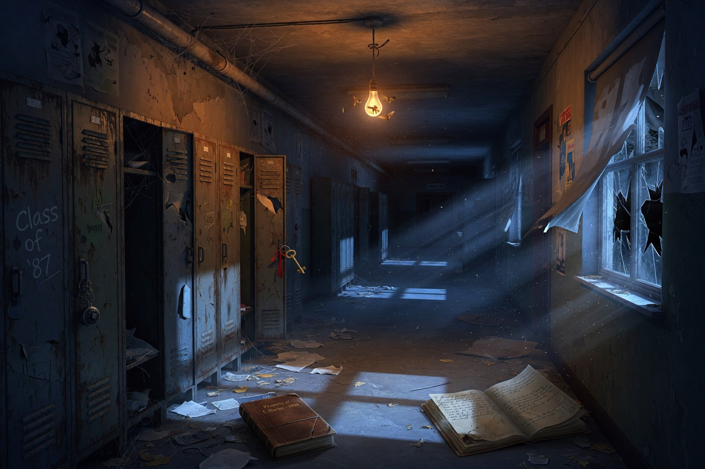

Испытание 01 · ⏳
Хронология исчезновения
Механика: Хронология. Для каждой пары событий выбери правильную форму: что happened earlier (Past Perfect — had + V₃), а что позже (Past Simple).

Прошлые тайны • 50 лет молчания
Сюжет • Часть II
В заброшенном крыле школы находится locker ученицы, которая vanished пятьдесят лет назад. Ты находишь старый key и diary с warning. Нужно узнать, что произошло до того, как дверь заперли навсегда.
Грамматика ночи
had + V₃
до того, как...
Past Perfect = завершённое действие к моменту в Past Simple
Открыть шкафчик 10 слов • 5 заданий
Досье лексики
10 слов крыла. Нажми на карточку: британский голос браузера прочитает слово и пример, откроются перевод и транскрипция.
Правила времени
Ключ к разгадке: что случилось раньше, а что — позже.
Квест • Забытый шкафчик
Все задания и финал открыты сразу — проходи в любом порядке. Каждое задание — свой формат. Прогресс сохраняется сам.
Крыло не открывали с 1974 года. Смотри на коридор, читая задания: шкафчик, ключ и дневник — всё здесь.
Испытание 01 · ⏳
Механика: Хронология. Для каждой пары событий выбери правильную форму: что happened earlier (Past Perfect — had + V₃), а что позже (Past Simple).
Испытание 02 · 📔
Механика: Cloze Test. Страницы дневника повреждены временем. Восстанови пропущенные глаголы. Помни: Past Perfect для более раннего действия, Past Simple для более позднего.
Испытание 03 · 🔍
Механика: Sentence Builder. Собери предложения из разрозненных слов. Нажми на слово внизу — оно перейдёт наверх. Нажми наверх — вернётся. Используй подсказку для порядка.
Испытание 04 · 👻
Механика: Error Correction. Призрак Лилии пытается рассказать свою историю, но путает времена и формы. Найди и выбери правильный вариант для каждого предложения.
Испытание 05 · 📜
Механика: Story Chain. Составь хронику пятидесятилетней давности. В каждом предложении определи: какое действие было раньше (had + V₃), а какое позже (Past Simple).
Финал • Отражение
Раздел открыт всегда. Ты прошла через тайны прошлого. Теперь, по-русски, честно — что в изучении английского даётся с трудом? Это поможет школе настроить следующие главы под тебя.
Что вызывает трудности?
Твои данные останутся только в дневнике Shadow School, на этом устройстве.